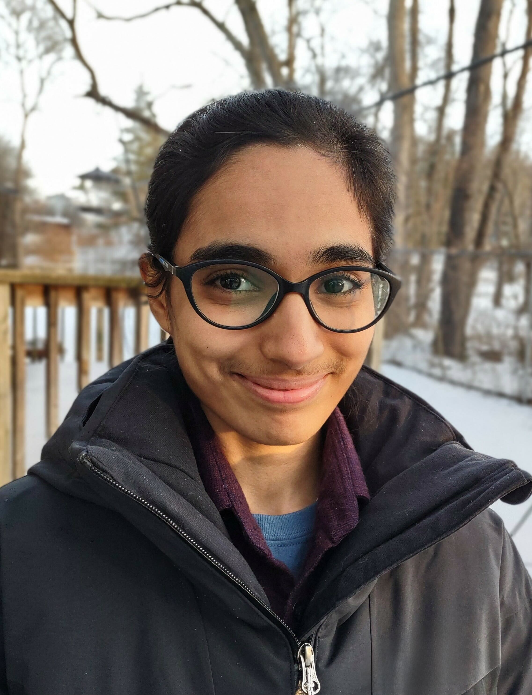
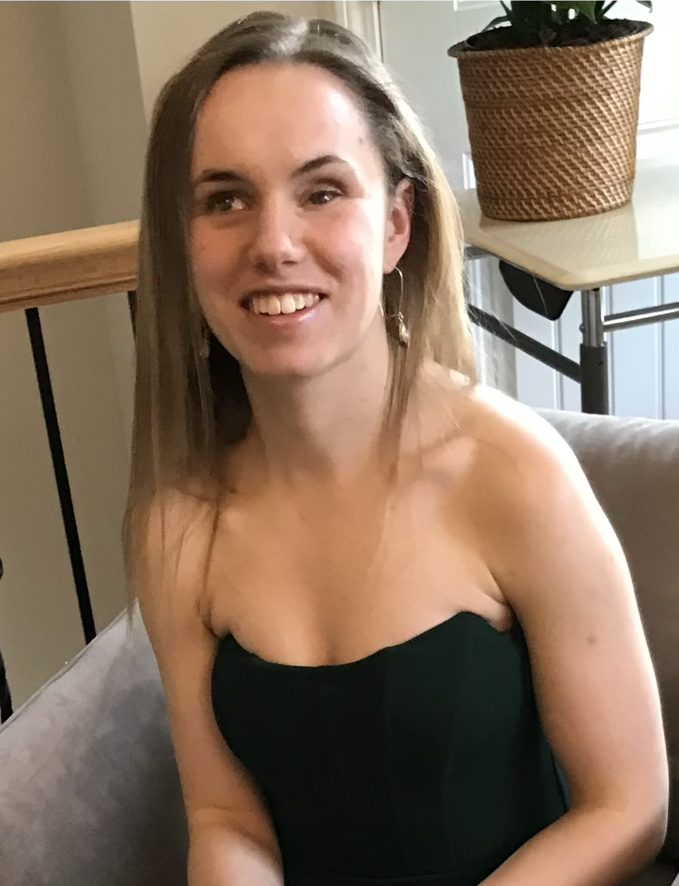
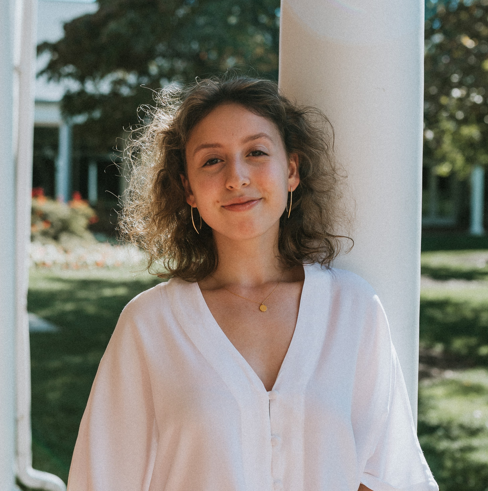
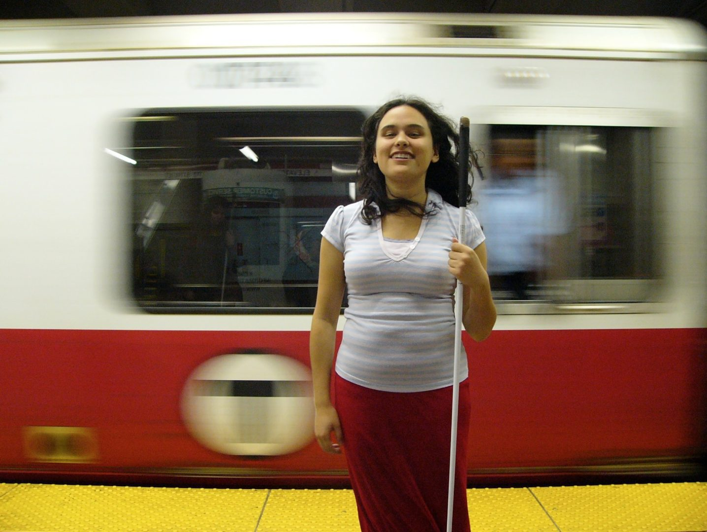
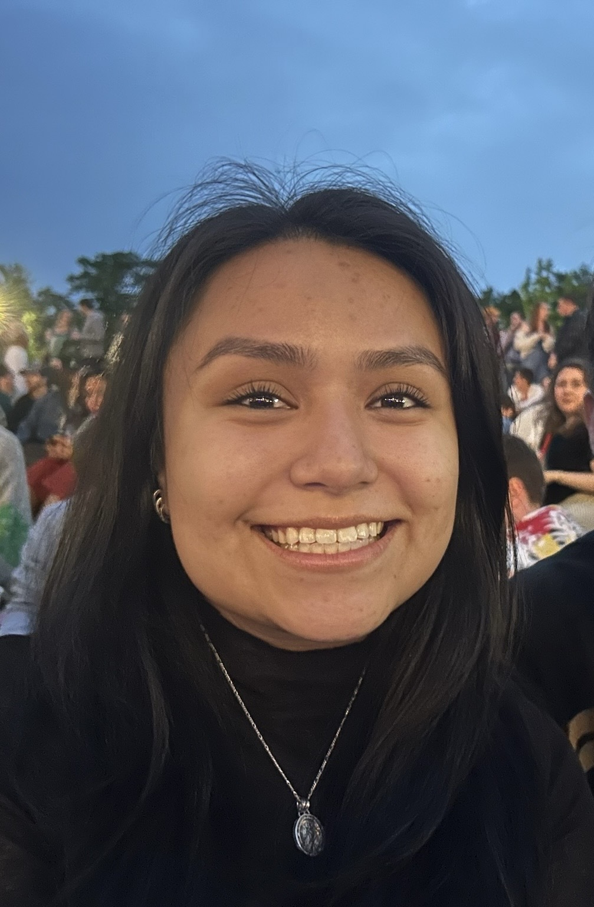

Marina Bedny
Principal InvestigatorDirectory · CV · marina.bedny@jhu.edu
225 Ames Hall · 410-516-2841
Directory · CV · marina.bedny@jhu.edu
225 Ames Hall · 410-516-2841

I am interested in understanding how different life experiences can affect sentence processing and the neural basis of language. Currently, my research investigates how congenitally blind people and sighted people process complex sentences during reading and listening.

I study how the brain learns brand-new skills like computer programming. Coding is a very recent invention, and our brains don't grow new parts for it; instead, they cleverly "recycle" systems for logical reasoning and recruit help from language systems. By combining brain imaging and behavioral research, I seek to understand not just how we program computers, but how our minds program themselves to learn.

I study how different modalities and experiences shape language in the brain. I specifically work with braille and ASL.

I use neural and behavioral measures to study how human concepts change with experience.

I use functional neuroimaging to study the neural basis of American Sign Language in Deaf signers and to investigate how diverse early life language experiences shape the neural systems that support language.

I am interested in how diverse experiences — sensory, linguistic, cultural, and developmental — shape the way humans form concepts and acquire knowledge. My current research uses behavioral and fMRI methods to examine the roles of language and first-person experience in intuitive theories of perception, as well as the neural basis of braille literacy.

Brain plasticity and concepts in d/Deaf individuals and sign language users, with a focus on how language deprivation impacts their development.


I am interested in the brain's functional plasticity and its intersection with mental actions, including counting, reasoning, and language-based thinking, and how these processes are shaped by individual experience.

I am studying how different interpretations of a single event can shape neural responses.

My research interests are about neuroplasticity and how the brain adapts to change, as well as how conception varies based on lived experience.

How language is processed and represented physically in the brain.

My research interests are in cognitive and developmental neuroscience as well as neurological disorders.

I am interested in how blind individuals utilize neural circuits while reading Braille, and more broadly, in how neuroplasticity allows different life experiences to shape human cognition and thought processes.



